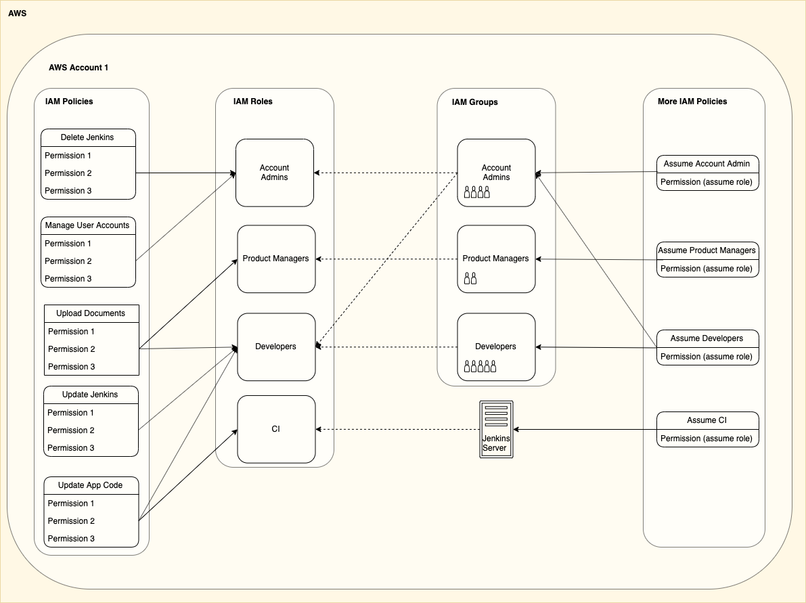
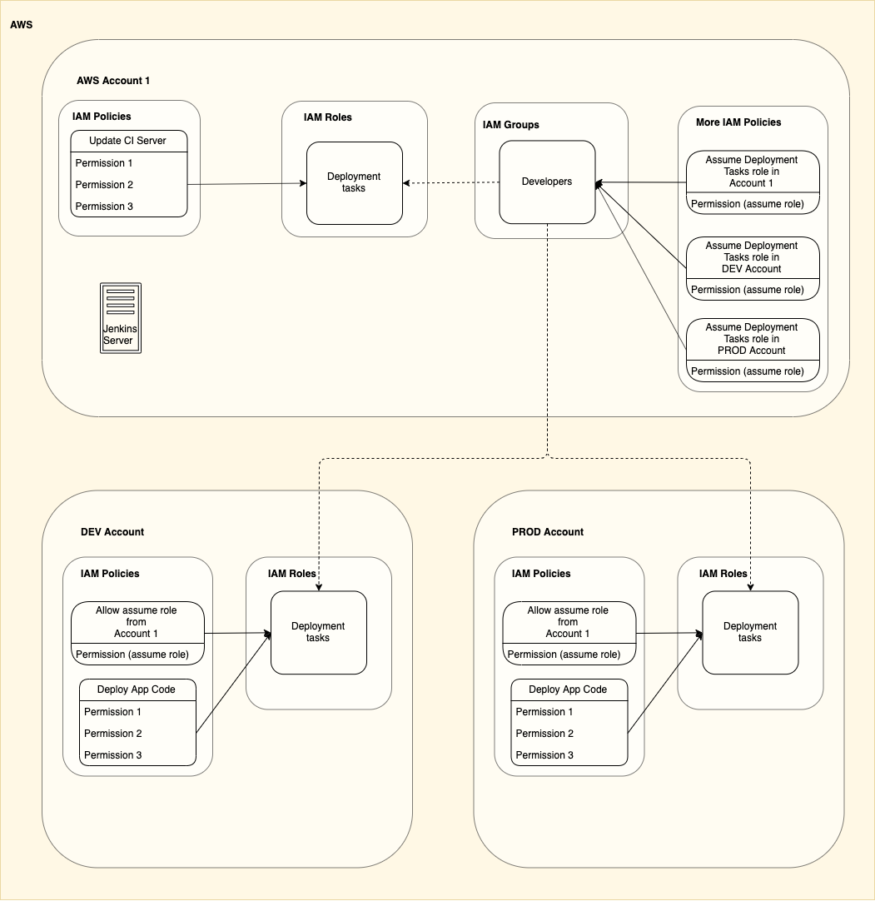
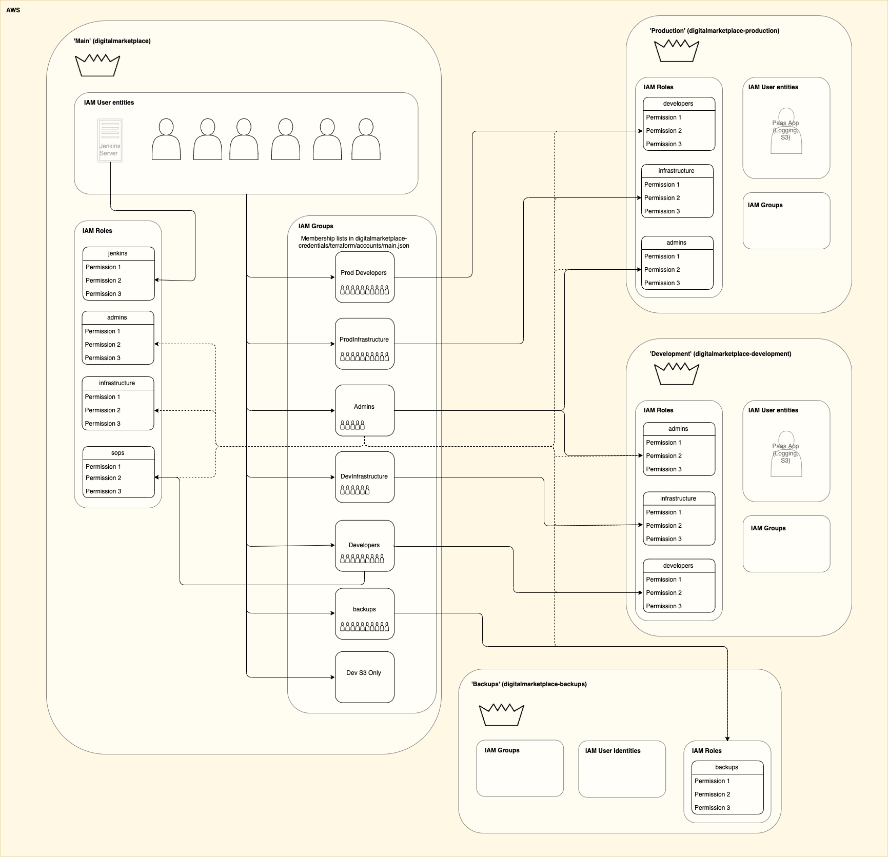

AWS Resources¶
Contents
We use a number of AWS services to host parts of the Digital Marketplace. Most of them are managed by Terraform modules in the digitalmarketplace-aws repo.
This include things like S3 buckets for document storage, CloudWatch logs and metrics, and Route 53 DNS records.
We host Jenkins using an EC2 instance in the main account.
Our AWS config is monitored by the GDS Cyber Security team’s Cloud Security Watch tool.
S3¶
Documents served from S3¶
The use of the term ‘documents’ here refers to downloadable content such as agreement and signature pages for suppliers, pricing and description pages for services and reports for admins. Commonly as PDFs or CSVs. See the S3 Buckets section for more.
These documents are served from S3, through the domain assets.digitalmarketplace.service.gov.uk.
These requests are proxied through the router app which maps the request to a public bucket and path URL defined in the
router app’s templates/assets.j2 configuration file, which in turn depends on a set of variables of the form
$*_s3_url, defined in the digitalmarketplace-credentials vars files.
The second element of the public path is used to decide which of the $*_s3_url to use as the base of the bucket url.
This base url is then joined with the full, original public path to build the final S3 url.
For example:
https://assets.digitalmarketplace.service.gov.uk/digital-outcomes-and-specialists-3/communications/data/opportunity-data.csv
Maps to:
https://digitalmarketplace-documents-production-production.s3.amazonaws.com/digital-outcomes-and-specialists-3/communications/data/opportunity-data.csv
Because the 2nd element of the url is communications, and the communications_s3_url value in templates/assets.j2 is mapped to https://digitalmarketplace-communications-production-production.s3.amazonaws.com.
Some other, non-public files are served directly to the user using temporary “pre-signed” S3 urls.
S3 Buckets¶
The app uses a number of S3 buckets. These include:
digitalmarketplace-documents-<stage>-<environment>: documents linked to from live G-Cloud services, served from theassetsdomain for the environmentdigitalmarketplace-communications-<stage>-<environment>: documents relevant to particular framework application processes - contracts, invitations to apply, MISO reporting templates, as well as files uploaded by framework owner admins (clarification question responses, and general during-application communications) - at least some of these are public and served from theassetsdomain.digitalmarketplace-submissions-<stage>-<environment>: documents uploaded by suppliers as part of draft G-Cloud services, private to the supplier who uploaded them (NOT public and NOT served from theassetsdomain)digitalmarketplace-agreements-<stage>-<environment>: framework agreement documents generated by us for suppliers, and those returned by suppliers once they’re signed (private to the suppliers, NOT public and NOT served fromassetsdomain)
Where <stage> is either preview staging or production. While <environment> is hypothetically the
“sub-instance” of each stage, in practise, at time of writing at least, we only have one environment per stage and so
we basically just end up echoing the <stage>. Hence e.g. digitalmarketplace-communications-staging-staging.
There is also:
digitalmarketplace-dev-uploads: bucket where all local development things end up (submissions, documents, agreements and communications)
Cross region replication¶
We use cross region replication (eu-west-1 to eu-west-2) to back up some of our buckets.
The documents, communications, submissions and agreements buckets in production and preview are all
backed up this way as are the database dumps in the backups bucket/ account.
See also
The S3 buckets (database replication)
To initialise replication you first need to create the bucket in to which you will be replicating (the destination bucket), then tell the source bucket to replicate all files to the new bucket.
The replication configuration is applied via the aws_s3_bucket.replication_configuration option in the terraform
files:
terraform/environments/preview/s3_replication_buckets.tf terraform/environments/preview/s3_buckets.tf
MFA Delete¶
Most of our buckets have MFA delete enabled. You need access to the relevant root AWS account to delete from one of those buckets.
IAM¶
Digital Marketplace accounts use the AWS IAM (Identity and Access Management) service to manage permissions relating to AWS infrastructure components.
Digital Marketplace uses a system of users/ groups, permissions/ policies and roles to share access to resources across accounts.
Actors and Actions¶
https://docs.aws.amazon.com/IAM/latest/UserGuide/id.html
Note
See the AWS Tutorial: Delegate Access Across AWS Accounts Using IAM Roles for a simplified example of how this can work.
IAM Identities¶
Actions in AWS must be performed by an identity. Identities can be attributed to different kinds of actors. For example an EC2 instance, a Lambda, an AWS service (such as S3 replication) or Users are all IAM identities.
Users¶
https://docs.aws.amazon.com/IAM/latest/UserGuide/id_users.html
Users are a type of IAM identity that are used to represent actors that are not AWS infrastructure (i.e. people). Commonly they are used to log in to the console.
Groups¶
https://docs.aws.amazon.com/IAM/latest/UserGuide/id_groups.html
Groups are not IAM identities. They are a collection of (only) user type IAM identities. One user can belong to many groups, one group can contain many users.
Roles¶
https://docs.aws.amazon.com/IAM/latest/UserGuide/id_roles.html
Roles are another type of IAM identity. Other IAM identities can ‘assume’ a role and perform actions as that role. Think of it like logging in as a different user with different permissions.
Permissions¶
https://docs.aws.amazon.com/IAM/latest/UserGuide/access_policies.html
Permissions describe actions in AWS.
For example if your user has the permission s3:GetObject on a bucket key and that bucket allows your user to s3:GetObject on its keys you can download an object from an S3 bucket.
Policies¶
https://docs.aws.amazon.com/IAM/latest/UserGuide/access_policies.html
Polices are groups of permissions. They can be attached to IAM Identities or groups.
How these can fit together¶
Warning
This is an example and does not accurately reflect our setup.
A common pattern for setting up roles, groups and policies is:
Users are added to groups
All the users of a given group are given permission to assume certain roles
The permission to actually do anything is attached to the role
This is demonstrated below where unbroken lines represent granting permissions and dotted lines represent assuming a role:
In this example we can see that:
Jenkins only gets one permission:
Jenkins is given permission to assume the CI role
The CI role is given permission to ‘Update App Code’
When Jenkins assumes its CI role it can ‘Update App Code’
Users in the ‘Account Admin’ group are given the highest level of access:
They are given permission to assume both the ‘Account Admin’ role and the ‘Developers’ role
The Account Admin role gets 2 permissions
The Developers role gets 3 permissions
This means that by assuming the different roles the users in the Admins group can access all the permissions
Multi Account IAM Management¶
This pattern starts to make more sense in a multi account structure.
For simplicity we will define a single group of users in our primary account that should be able to update the CI server and deploy code in our other accounts (PROD and DEV):
In the above image we have 3 accounts.
A primary account (AWS Account 1) where we manage permissions and have a CI server performing our deployments
A PROD account where we run our production infrastructure
A DEV account where we run our development infrastructure
The Developers group in the main account is given permission to assume 3 different roles. One in each account.
Notice that the DEV and PROD accounts are identical. By using roles we have allowed our accounts to use the same structure.
Digital Marketplace Users IAM¶
Digital Marketplace uses a system of users, groups, policies and roles to share access to resources across accounts much like the simplified example above.
All of the permissions, roles and groups are defined using terraform. The lists of group membership are contained in the credentials repo.
The below image shows the roles that we grant to users that can log in:
Each account has a root user indicated by a crown. As per
AWS recommendation we lock this user by
forgetting the password. The Cyber Security team monitor password reset requests on the root accounts, so let them
know in advance (e.g. via their Slack channel #cyber-security-help) if you need to do this.
The solid lines indicate an explicit grant of access to a role, dotted lines are a grant implied by a broad permissions policy.
It’s important to remember that to get access to a role in another account the group must be granted access by both their account and the account that the role belongs to.
Further reading¶
For more information on the accounts and roles Digital Marketplace employs see the section AWS accounts and access.
For an example of how to add a user to a given group see the AWS section of the Adding and removing access for new starters / leavers page.